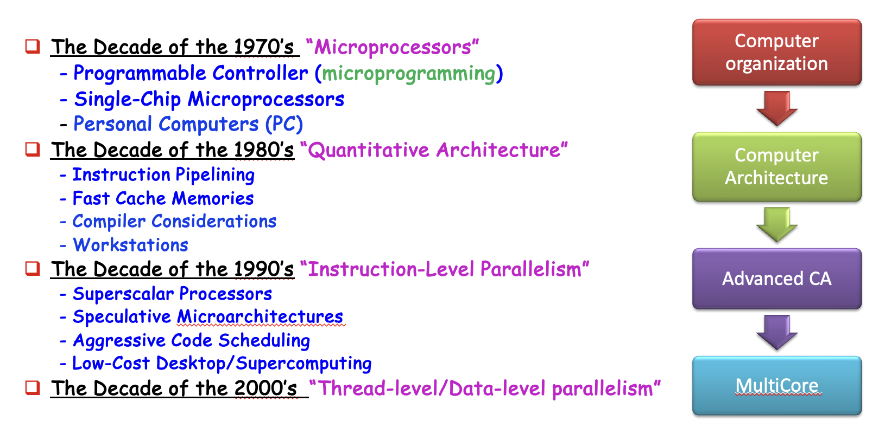
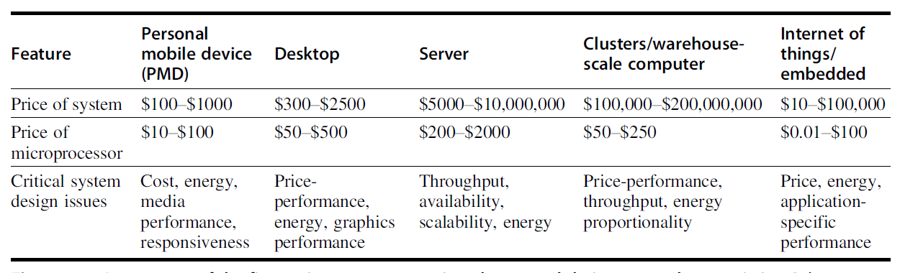
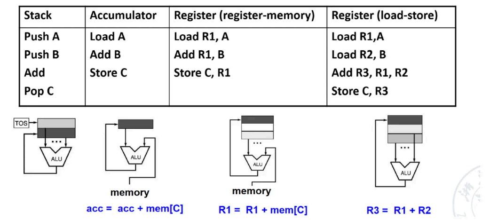
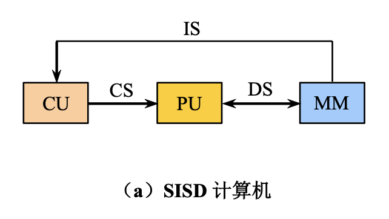
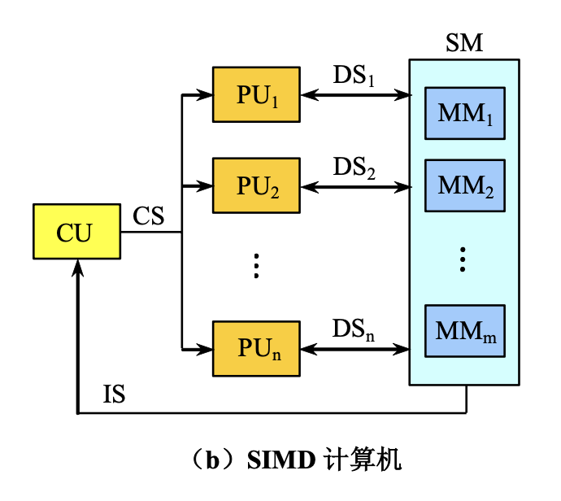
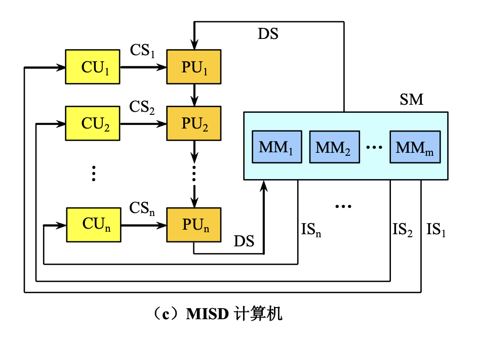
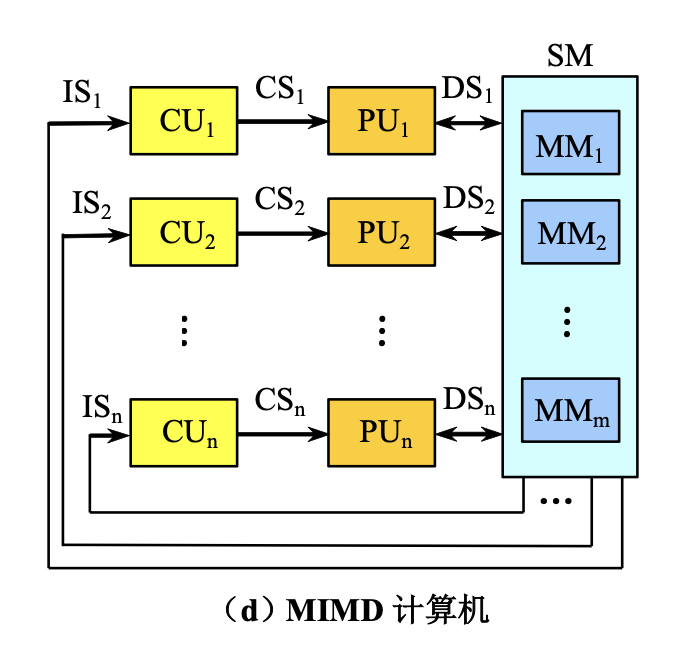
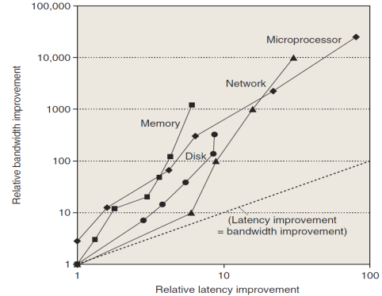
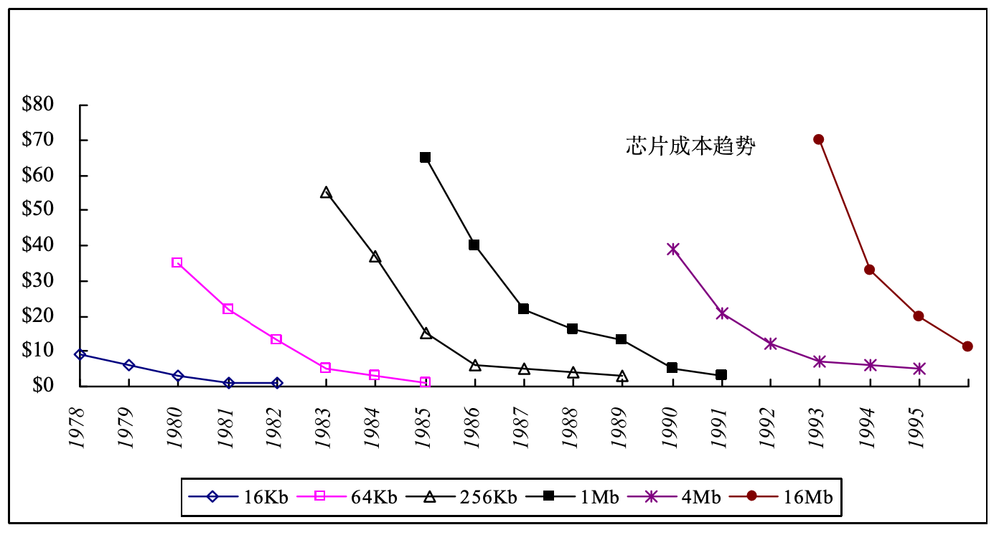
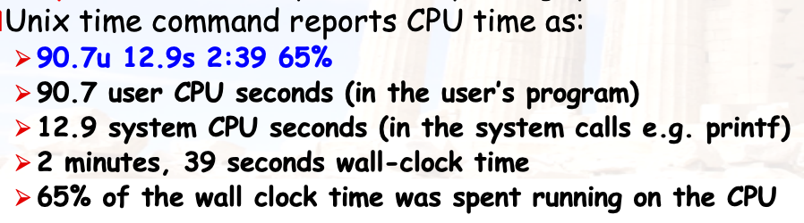

Fundamentals of Quantitative Design and Analysis¶
1.1 Introduction¶
计算机组成 & 计算机体系结构
体系结构从程序员的角度出发
- 优化程序性能
- 了解计算机硬件如何执行程序
- 处于较高的抽象层次，多从逻辑和功能出发
组成课从硬件工程师的角度出发
- 实现体系结构的技术手段
- 系统的物理实现
- 处于较低的抽象层次，多从电路和器件出发
计算机架构发展时期

Computer architecture comprises at least three main subcategories:
- 指令集架构 Instruction set architecture
- 规定了软件如何控制硬件
- 包括：指令集、寄存器类型、内存寻址方式等
- ISA 设计的七个维度
- Class of ISA
- Memory addressing
- Addressing modes
- Types and sizes of operands
- Operations
- Control flow instructions
- Encoding an ISA
- 微架构 Microarchitecture (computer organization)
- 涉及硬件部件如何互连以实现 ISA
- 系统设计 System Design
涉及计算系统内所有其他的硬件组件，侧重于具体的物理实现- Logic Implementation：逻辑门电路的设计
- Circuit Implementation：晶体管级别的电路设计
- Physical Implementation：芯片的实际布线和封装
Challenges of "three walls"
- ILP Wall
- 寻找更多指令级并行（ILP）硬件带来的收益正在递减
- 必须开发显式的线程级并行（TLP）和数据级并行（DLP）
- Memory Wall
- CPU 速度与芯片外内存速度之间的差距日益扩大
- 内存延迟将成为计算机性能的压倒性瓶颈
- Power Wall：运行频率每翻一倍，功耗往往会翻一两倍的趋势
1.2 Classes of computers¶

Servers（服务器）
- The role of servers to provide larger scale and more reliable file and computing services grew.
- 需要考虑的因素：可用性 (availability)、可扩展性 (scalability)、吞吐量 (throughput)
Clusters（集群）/ Warehouse-scale computer（仓库规模计算机）
- SaaS (Search,social networking, video sharing, multiplayergames, online-shopping)
- WSC—tens of thousands of servers act as one
Embedded (嵌入式系统)
- The fastest growing portion of the computer market with widest spread of processing power and cost.
Other classification¶
- Quantum computer & Chemical computer
- Scalar processor & Vector processor
- 标量处理器每一条指令只处理一对数据
- 向量处理器同时处理一组数据线（数组）
- NUMA & UMA
- NUMA（Non-Uniform Memory Access）：每个 CPU 节点有自己的本地内存。访问本地内存极快，但访问其他节点的内存需要跨越互联总线，延迟明显增加。
- UMA（Uniform Memory Access）：所有 CPU 核心共享同一个内存控制器，访问任何内存地址的延迟是均衡的
- Register machine vs Stack machine vs Accumulater machine
- Harvard architecture vs Von Neumann architecture vs Non Von Neumann architecture （类脑芯片：达尔文2）
- 冯诺伊曼：指令和数据存储在同一个内存空间，共享同一条总线
- 哈佛：指令和数据拥有独立的存储器和总线。现代 CPU 内部的 L1 Cache 通常采用这种设计
- 类脑芯片：模仿神经元和突触，每个“神经元”既是处理器也是存储器
- RISC vs. CISC
- Cellular architecture（蜂窝架构）
- 将计算平面划分为大量重复的、简单的计算单元
- 每个单元只与其相邻的单元通信。
Class of ISA

- General-Purpose Register Architecture (GPR)
- 显式操作数，位于通用寄存器，灵活且速度快，但指令编码较长
- 分类
- 寄存器-内存型（x86）：任何指令都能访问内存
- 寄存器-寄存器型（MIPS）：仅 load/store 指令可以访问内存
- 目前最主流，因为寄存器比内存更快，而且更适合存储变量
- Stack Architecture
- 隐式操作数，位于栈顶
- 指令长度极短（零地址指令）；操作数从栈中弹出，结果压入栈中
- Accumulator Architecture
- 一个隐含的累加器寄存器
- 极省硬件，指令短，但编程繁琐
Classes of Parallelism and Parallel Architecture¶
应用层面的两种并行：
- 数据级并行(data-level parallelism, DLP)
- 任务级并行(task-level parallelism, TLP)
硬件层面的四种并行：
- 指令级并行(instruction-level parallelism, ILP)
- 向量架构、GPUs、多媒体指令集
- 线程级并行(threaad-level parallelism, TLP)
- 请求级并行(request-level parallelism, RLP)
Flynn Taxonomy¶
A classification of computer architectures based on the number of streams of instructions and data
图上标注的符号
CU: Control Unit
PU: Processing Unit
MM: Main Memory
IS: Instruction Stream
DS: Data Stream
CS: Control Stream
SISD：Single Instruction, Single Data
最传统的冯·诺依曼架构，处理器一次只能执行一条指令，且该指令只能处理一个数据
- 原理：串行执行，指令寄存器发出指令，ALU对单个内存地址中的数据进行操作
- 代表：早期的单核 CPU、单片机
- 特点：结构简单，但处理速度受限于硬件的时钟频率

SIMD：Single Instruction, Multiple Data
- 原理：数据级并行，适用于对大量相同类型的数据进行相同操作的场景
- 代表：GPU（用于大规模矩阵运算和图像处理）、现代 CPU 的指令集扩展
- 特点：在处理视频编解码、3D 渲染和深度学习（如矩阵加法）时效率极高

MISD：Multiple Instruction, Single Data
- 多个处理单元同时对同一个数据流执行不同的指令，没有实际应用

MIMD：Multiple Instruction, Multiple Data
- 目前高性能计算和服务器领域最主流的架构，多个处理器独立执行不同的指令序列，并处理不同的数据集

1.4 Trends in Technology¶
计算机的技术实现：
- 集成电路
- DRAM
- 闪存
- 磁盘
- 网络
上述技术实现性能体现在以下两个因素：
- 带宽(bandwidth)/ 吞吐量 (throughput)：一定时间内的工作总量
- 时延(latency)/ 响应时间 (response time)：从开始到完成事件所经过的时间
虽然这两个因素的提升在不同技术上有不同的表现，但是总的来说带宽的提升量高于时延。相关的一个经验法则是：带宽的提升量至少是时延提升量的平方倍。

1.5 Trends in power and energy in Integrated circuits¶
计算微处理器的能耗和功率：
- Dynamic power: 开关晶体管消耗的能量
- Static power：晶体管由于电流泄露消耗的能量
可以看到：
- 减小时钟频率可以降低功率，但无法降低能耗
- 减小电压可以显著降低功率和能耗
- Rule of Thumb：小幅降压可大幅省电，而性能损失相对较小
- 晶体管数量的增加会导致更高的功率以及更严重的电流泄露，因为 SRAM 缓存需要耗电来维持存储在内部的值
1.6 Trends in Cost¶
影响计算机成本的几个主要因素：
- 时间(time)：
- Component prices drop over time without major improvements in manufacturing technology
- Twice the yield will have half the cost.(for chip, board, or a system)
- 产量(volume)：
- Volume decreases cost due to increases in manufacturing efficiency.
- 商品化(commoditization)：
- The competition among the suppliers of the components will decrease overall product cost.
Learning Curve
- 随时间流逝，制造成本不断降低

Cost of an Integreted Circuit¶
集成电路的成本计算公式为：
- 一颗芯片的最终成本 = 制造成本 + 测试成本 + 封装成本，再除以最终良品率
其中晶片 (die) 的成本为：
- 单颗晶片的成本 = 一片晶圆的价格，除以一片晶圆能切除的芯片数量以及芯片的良品率
而每个晶圆 (wafer) 上的晶片数量为：
- 理论最大数减去一个修正参数
晶片产出 (die yield)：
- 简洁起见，假定晶圆产出 (wafer yield) 为 100%
- 每单位面积上的瑕疵 (defects per unit area) 较为随机，取值会在一定范围内变化
- \(N\) 表示加工-复杂度因子 (process-complexity factor)，用于测量制造难度
1.7 Dependability¶
Service Level Agreements (SLA) / Service Level Objectives (SLO)：
- SLA（服务水平协议）：
供应商与客户之间签订的正式合同，规定服务的质量指标（如99.9%可用性）、违约责任等 - SLO（服务水平目标）：
内部设定的具体性能目标，通常是 SLA 的量化基础（例如：“每月宕机时间不超过43分钟”）
可以用 SLA 来判断系统处于运行还是停机状态，将服务状态分为：
- Service accomplishment：系统正在按 SLO/SLA 要求正常提供服务。
- Service interruption：系统未能满足 SLO/SLA，出现故障、延迟、不可用等情况
- Failures:
- Restorations:
Measurements of Dependability¶
模块可靠性（Module reliability）: continuous service accomplishment of the time to failure
- 平均故障时间（MTTF）: Mean Time To Failure
- 故障率（FIT）: Failure In Time = 1/MTTF
- 平均修复时间（MTTR）: Mean Time To Repair (service interruption)
- 平均故障间隔时间（MTBF）: Mean Time Between Failure = MTTF+MTTR
模块可用性 (Module availability)：
Way to cope with failure: Redundancy 冗余
- Time redundancy: repeat the operation again to see if it is still in erroneous.
- Resource redundancy: repeat the operation again to see if it is still in erroneous.
Example
A system consists of the following components: 10 disks, 1000000 hour MTTF 1 SCSI controller, 500000 hour MTTF 1 power supply, 1 fan, both 200000 hour MTTF 1 SCSI cable, 1000000 hour MTTF. What is the MTTF of the system?
1.8 Measuring, Reporting and Summarizing Performance¶
衡量计算机性能的指标有：
- 执行时间（Execution time / latency）
- 吞吐量（Throughput）
- MIPS: millions of instructions per second，每秒百万条指令
- \(\text{MIPS}=\dfrac{\frac{\text{\# of instructions}}{\text{benchmark}}\times\frac{\text{benchmark}}{\text{total run time}}}{1000000}\)
- 通过 MIPS 比较性能时要采用相同的 ISA
三种计算执行时间的方式：
- 总执行时间
- 算术平均数(Arithmetic Mean)：\(\text{AM}=\frac{1}{n}\sum_{i=1}^n \text{Time}_i\)
- 调和平均数(Harmonic Mean)：\(\text{HM}=\dfrac{1}{\sum_{i=1}^n \frac{1}{\text{Rate}_i}}\)
- 前者只能表示时间的平均值，后者只能表示速度的平均值
- 但是测试的程序在实际应用中的 workload 不一定是真实的
- 带有权重的执行时间（Weighted Execution Time）
- \(\text{WET}=\sum_{i=1}^n \text{Weight}_i \times \text{Time}_i\)
- Weighted Harmonic Mean: \(\text{WHM}=\dfrac{1}{\sum_{i=1}^n \frac{\text{Weight}_i}{\text{Rate}_i}}\)
- 几何平均值
- 几何平均数(Geometric Mean)：\(\text{GM}=\sqrt{\Pi_{i=1}^n \text{Relative\_Rate}_i}\)
- Normalized Geometric Mean 具有统一的结果，无论参考机器是什么
1. Benchmarks¶
测试程序需要避免的三种"陷阱"：
- 核 (kernel)：真实应用中小而关键的片段；太片面，不能反映整体
- 玩具程序：百行左右的入门代码；太简单，与实际差距大
- 综合基准测试：人造的假程序，模拟真实应用轮廓；模拟≠真实，可能误导
关于编译器优化问题
- 允许使用针对该基准测试优化的编译器标志（ benchmark-specific compiler flag）：可以针对测试特供优化，但在很多程序中的性能反而变差
- 源代码修改限制：
- 不允许修改
- 允许修改，但实际不太会改
- 允许修改，只要输出结果相同（领域专用架构常用）
基准测试套件 (Suites)：
- 单个基准测试容易存在缺陷/偏见，测试套件包含多个不同的基准测试，互相弥补缺陷
- SPEC（Standard Performance Evaluation Corporation）是目前最权威的基准测试组织。
2. Measuring Performance Results¶
Wall-clock time：指从启动一个程序开始，到它完全结束为止，墙上挂钟所经过的总时间，也叫 response time响应时间或 elapsed time流逝时间
- 包含所有等待时间，反应用户对系统速度的感知
- 多程序并发运行时干扰大，依赖用户交互
CPU time：指程序运行时，CPU 实际用于执行该程序指令的时间，不包括等待 I/O、睡眠或被其他进程抢占的时间
- User time（用户态时间）：程序在用户模式（user mode）下执行所花费的 CPU 时间
- System time（系统态时间）：程序在内核模式（kernel mode）下执行所花费的 CPU 时间
Example
|字段|含义|
|---|---|
|90.7u|User CPU seconds = 90.7 秒 → 用户态代码占用 CPU 的时间|
|12.9s|System CPU seconds = 12.9 秒 → 系统调用占用 CPU 的时间|
|2:39|Wall-clock time = 2 分 39 秒 = 159 秒 → 总 elapsed time|
|65%|CPU utilization = (90.7 + 12.9) / 159 ≈ 65% → CPU 实际忙碌比例|

3. Reporting Performance Results¶
- 报告性能测量的指导原则应该是具备可重复性(reproducibility)：列出其他实验者能够复现结果的一切条件。
- SPEC 基准测试报告需要计算机和编译器标志的详细描述、基本和优化的结果、以表格或图的形式展示实际的性能计时
4. Summarizing Performance Results¶
- 性能测试结果的方法：比较在基准测试组件的各项程序中执行时间的算术/加权平均值
- SPECRatio：参考计算机的执行时间 / 被测计算机的执行时间，有以下等式成立：
- 由于 SPECRatio 是比率而非绝对执行时间，因此计算平均值时应采用几何平均值，即 \(\text{Geometric mean} = \sqrt[n]{\prod\limits_{i=1}^n \text{sample}_i}\)。使用几何平均值时确保两条重要的性质：
- （时间）比率的几何平均值 = 几何平均值的比率
- 几何平均值的比率 = 性能比率的集合平均值，因此与参考计算机的选择无关
1.9 Quantitative Principles of Computer Design¶
- 利用并行
- 系统级别：多处理器
- 指令级别：流水线等
- 操作单元级别：组关联缓存、流水化功能器件等
- 局部性原则(principle of locality)
- 时间局部性(temporal locality)：最近被访问过的项很有可能在不久之后会被再次访问
- 空间局部性(spatial locality)：地址相邻的项被引用的时间比较相近
经验法则：90-10 法则：程序的 90% 的执行时间花费在 10% 的代码上
- 专注于一般情况(common case)
- 有助于计算机在能耗、资源分配、性能、可靠性等方面的改善
- 通常而言，一般情况比不常见的情况更简单，执行速度更快
- 阿姆达尔定律(Amdahl's Law)：simple is fast
- 其中 $f$ 为性能提升的部分占比，$s$ 为提升的比例。
- CPU 性能计算公式
- CPU 时间的计算公式：
- CPI (clock cycles per instruction)，以及它的倒数 IPC
$$
\text{CPI} = \dfrac{\text{CPU clock cycles for a program}}{\text{Instruction count}}
$$
- 因此 CPU 时间计算公式可以改写为：
$$
\dfrac{\text{Instructions}}{\text{Program}} \times\dfrac{\text{Clock cycles}}{\text{Instruction}} \times\dfrac{\text{Seconds}}{\text{Clock cycle}} =\dfrac{\text{Seconds}}{\text{Program}} = \text{CPU time}
$$
- 性能取决于：
- 算法：影响指令数 (IC)，也可能影响 CPI
- 编程语言、编译器：影响 IC 和 CPI
- 指令集架构：影响 IC、CPI 和周期时间
- 对于多条指令
- CPU 时钟周期数：$\text{CPU clock cycles} = \sum\limits_{i=1}^n \text{IC}_i \times \text{CPI}_i$
- CPU 时间：$\text{CPU time} = \Big(\sum\limits_{i=1}^n \text{IC}_i \times \text{CPI}_i \Big) \times \text{Clock cycle time}$
- CPI：$\text{CPI} = \dfrac{\sum\limits_{i=1}^n \text{IC}_i \times \text{CPI}_i}{\text{Instruction count}} = \sum\limits_{i=1}^n \dfrac{\text{IC}_i}{\text{Instruction count}} \times \text{CPI}_i$